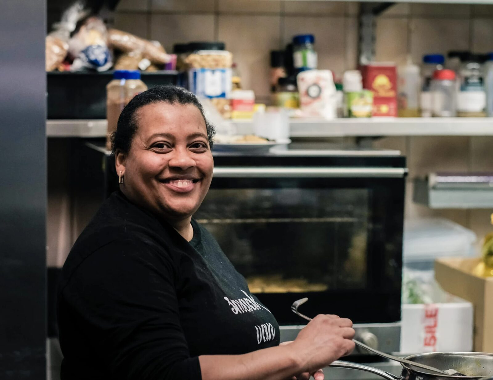
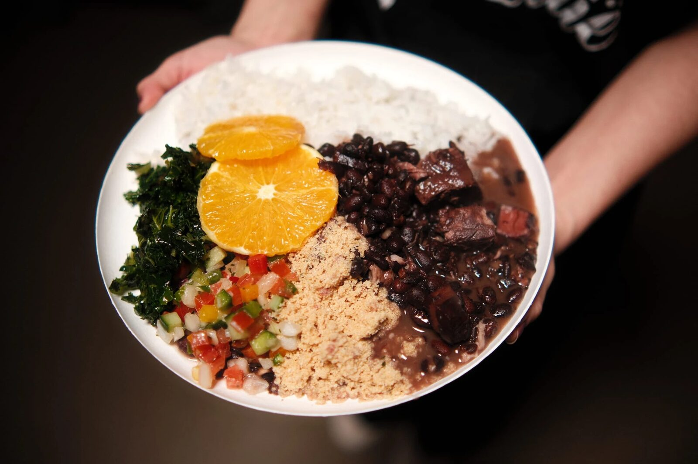
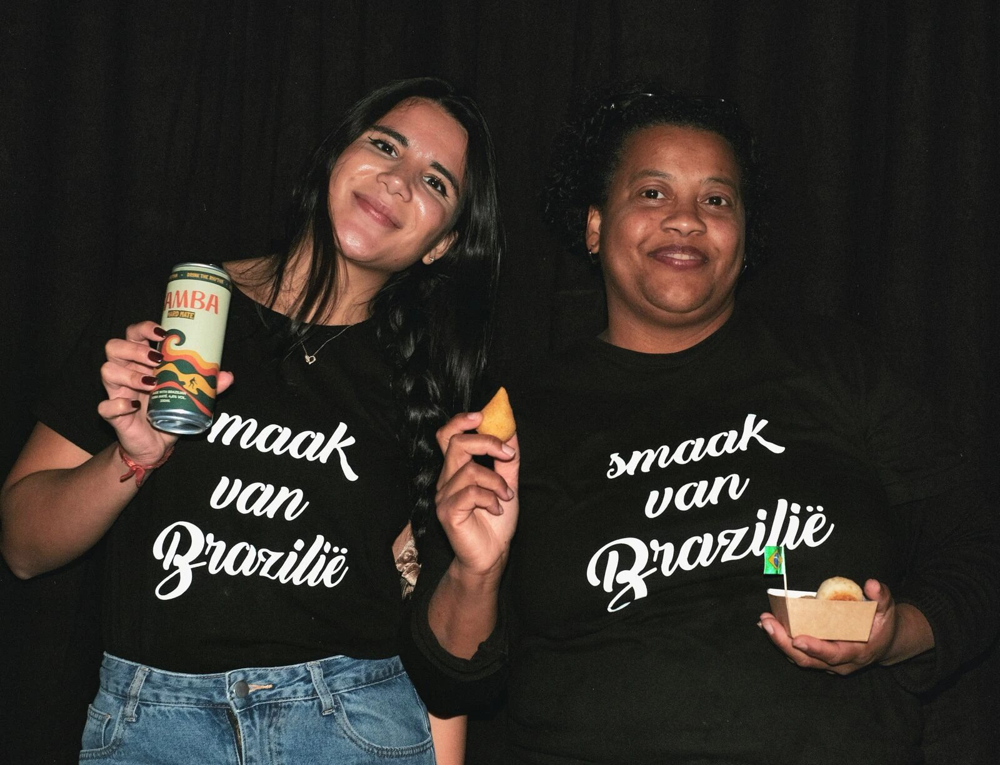

Smaak van Brazilië is Aina. Haar recepten, haar handen, haar manier van gastvrij zijn. Dit is haar verhaal.

Aina groeide op in Brazilië, in een familie waar de keuken altijd het drukste deel van het huis was. Er werd gekookt voor wie er maar langskwam, en er kwam altijd iemand langs. [Aanvullen: waar in Brazilië, en wie leerde haar koken.]
Toen ze naar Nederland verhuisde, miste ze vooral dat: de geur van coxinha's in de olie, de pan feijoada op zondag, de doos brigadeiros op elk verjaardagsfeest. Dus begon ze het zelf te maken. Eerst voor zichzelf, toen voor vrienden, toen voor vrienden van vrienden.
Aina gebruikt de recepten en technieken van thuis. Tapiocameel voor de pão de queijo, zwarte bonen die uren mogen stoven, deeg voor pastéis dat zo dun is dat het blaasjes trekt in de olie. Geen shortcuts, wel liefde.
Naast hartige hapjes en gerechten bakt ze taarten op maat: verjaardagstaarten, kindertaarten met thema, naked cakes met vers fruit en natuurlijk de brigadeirotaart. En voor wie van klein en zoet houdt: brigadeiros, beijinhos en handgemaakte bonbons.
"Als iemand een hap neemt en even stil wordt, dan weet ik dat het goed is."


Inmiddels is Smaak van Brazilië meer dan een bestellijst. Aina verzorgt catering voor feesten en bedrijven, staat op evenementen en organiseert elke maand een Braziliaanse restaurantdag in Groningen. Vanaf 2027 komt daar Leeuwarden bij.
Wat niet verandert: alles komt uit haar eigen keuken, en elke bestelling krijgt dezelfde aandacht als een maaltijd voor familie.
In Brazilië is eten een uitnodiging. Bij Aina ook. Je bent altijd welkom, voor één coxinha of voor een tafel van honderd.
Geen fabriek, geen diepvries van de groothandel. Aina rolt, vult, bakt en versiert alles zelf, in kleine hoeveelheden.
De recepten komen uit Brazilië en blijven zoals ze horen. Zo proef je niet "iets Braziliaans", maar Brazilië.